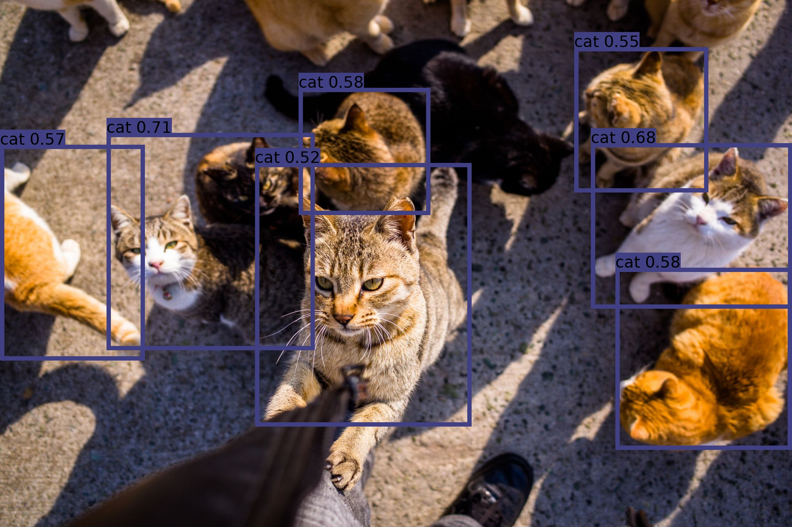

Deployment : Deploy your ML model in production (Version Longue de janvier 2023)🔗
Objectives🔗
Your first ML model in production !
- A model behind a Restful API, packaged in a docker
- A frontend using streamlit, packaged in a docker
- Deploy a multi-container application using docker compose
- Deploy the model in the docker image
- Send it to your friends !
Regardons ce notebook
Il effectue les opérations suivantes:
- Chargement d'un modèle
- Chargement d'une image
- Détection des "objets" sur l'image
- Dessin des détections sur l'image
- Affichage
L'objectif est de convertir ce notebook en deux applications :
- L'une qui "sert" les prédictions d'un modèle (le serveur)
- L'une qui permet à un utilisateur d'interagir facilement avec le modèle en mettant en ligne sa propre image (le "client")
Nous allons développer tout cela dans l'environnement de développement (codespaces)
Puis déployer le modèle dans l'environnement GCP
Team Composition🔗
C'est mieux d'être en binôme pour s'entraider :)
Configuration du codespace🔗
Nous allons utiliser github codespaces comme environnement de développement,
Repartir de https://github.com/github/codespaces-blank
Puis configurer ce codespace avec le google cloud sdk et configurer le projet isae-sdd
Hint
# Rappels : Installation du google cloud sdk
# https://cloud.google.com/sdk/docs/install#linux
curl -O https://dl.google.com/dl/cloudsdk/channels/rapid/downloads/google-cloud-cli-416.0.0-linux-x86_64.tar.gz
tar -xf google-cloud-cli-416.0.0-linux-x86.tar.gz
./google-cloud-sdk/install.sh
# Type yes to add to path !
export PATH=./google-cloud-sdk/bin:$PATH
gcloud init
# login and copy the token
# configure isae-sdd then compute zone 17
gcloud auth configure-docker
Voir les tps précédents
Maintenant, depuis ce codespace, ouvrez un terminal et récupérez les fichiers suivants :
gsutil cp -r gs://fchouteau-isae-cloud/deployment/* .
Hint
Si vous tombez à court de stockage dans le TP, lancez docker system prune pour nettoyer le cache docker
1 - Converting a prediction notebook into a webapplication🔗
Placez vous dans le dossier model nouvellement créé
Objectif🔗
Packager un modèle de machine learning derrière une webapplication pour pouvoir la déployer sur le web et servir des prédictions à des utilisateurs
Le modèle: Un détecteur d'objets sur des photographies "standard" supposé marcher en temps réel, qui sort des "bounding boxes" autour des objets détecté dans des images

Remarque : Le papier vaut la lecture https://pjreddie.com/media/files/papers/YOLOv3.pdf
On récupère la version disponible sur torchhub https://pytorch.org/hub/ultralytics_yolov5/ qui correspond au repository suivant https://github.com/ultralytics/yolov5
Voici une petite explication de l'historique de YOLO https://medium.com/towards-artificial-intelligence/yolo-v5-is-here-custom-object-detection-tutorial-with-yolo-v5-12666ee1774e
On se propose ici d'encapsuler 3 versions du modèle (S,M,L) qui sont 3 versions +/- complexes du modèle YOLO-V5, afin de pouvoir comparer les performances et les résultats

Déroulement🔗
- Transformer un notebook de prédiction en “WebApp” en remplissant
app.stub.pyet en le renommant enapp.py - Packager l'application sous forme d'une image docker
- Tester son image docker localement
- Uploader le docker sur Google Container Registry
Développement de app.py🔗
Regardons le app.stub.py (que l'on renommera en app.py)
import base64
import io
import time
from typing import List, Dict
import numpy as np
import torch
from PIL import Image
from fastapi import FastAPI, HTTPException
from pydantic import BaseModel
class Input(BaseModel):
model: str
image: str
class Detection(BaseModel):
x_min: int
y_min: int
x_max: int
y_max: int
class_name: str
confidence: float
class Result(BaseModel):
detections: List[Detection] = []
time: float = 0.0
model: str
# !!!! FILL ME
def parse_predictions(prediction: np.ndarray, classes: [str]) -> List[Detection]:
raise NotImplementedError
# !!!! FILL ME
def load_model(model_name: str):
""""""
raise NotImplementedError
MODEL_NAMES = ["yolov5s", "yolov5m", "yolov5l"]
app = FastAPI(
title="NAME ME",
description="""
DESCRIBE ME
""",
version="1.0",
)
# !!!! FILL ME
# This is a dictionnary that must contains a model for each key (model names), fill load model
# example: for model_name in MODEL_NAMES: MODELS[model_name] = load_model(model_name)
# You can also lazily load models only when they are called to avoid holding 3 models in memory
MODELS = ...
@app.get("/", description="return the title", response_description="FILL ME", response_model=str)
def root() -> str:
return app.title
@app.get("/describe", description="FILL ME", response_description="FILL ME", response_model=str)
def describe() -> str:
return app.description
@app.get("/health", description="FILL ME", response_description="FILL ME", response_model=str)
def health() -> str:
return "HEALTH OK"
@app.get("/models", description="FILL ME", response_description="FILL ME", response_model=List[str])
def models() -> [str]:
return MODEL_NAMES
@app.post("/predict", description="FILL ME", response_description="FILL ME", response_model=Result)
def predict(inputs: Input) -> Result:
# get correct model
model_name = inputs.model
if model_name not in MODEL_NAMES:
raise HTTPException(status_code=400, detail="wrong model name, choose between {}".format(MODEL_NAMES))
# Get the model from the list of available models
model = MODELS.get(model_name)
# Get & Decode image
try:
image = inputs.image.encode("utf-8")
image = base64.b64decode(image)
image = Image.open(io.BytesIO(image))
except:
raise HTTPException(status_code=400, detail="File is not an image")
# Convert from RGBA to RGB *to avoid alpha channels*
if image.mode == "RGBA":
image = image.convert("RGB")
# Inference
# RUN THE PREDICTION, TIME IT
predictions = ...
# Post processing
classes = predictions.names
predictions = predictions.xyxy[0].numpy()
# Create a list of [DETECTIONS] objects that match the detection class above, using the parse_predictions method
detections = ...
result = Result(detections=..., time=..., model=...)
return result
Dans un premier temps, vous pouvez remplir la description des "routes" (i.e. des fonctions de l'application):
@app.get("/", description="return the title", response_description="FILL ME", response_model=str)
def root() -> str:
return app.title
@app.get("/describe", description="FILL ME", response_description="FILL ME", response_model=str)
def describe() -> str:
return app.description
@app.get("/health", description="FILL ME", response_description="FILL ME", response_model=str)
def health() -> str:
return "HEALTH OK"
@app.get("/models", description="FILL ME", response_description="FILL ME", response_model=List[str])
def models() -> [str]:
return MODEL_NAMES
Il y a deux fonctions à compléter en s'inspirant du notebook inference.ipynb. Grace au typage de python, vous avez les types d'entrée et de sortie des deux fonctions
La première prend un tableau de type (left, top, right, bottom, confidence, class_index) et une liste de noms de classes et créée une liste d'objets Detection (voir le code pour la création des objets détection)
# !!!! FILL ME
def parse_predictions(predictions: np.ndarray, classes: [str]) -> List[Detection]:
raise NotImplementedError
Hint
def parse_prediction(prediction: np.ndarray, classes: [str]) -> Detection:
x0, y0, x1, y1, cnf, cls = prediction
detection = Detection(
x_min=int(x0),
y_min=int(y0),
x_max=int(x1),
y_max=int(y1),
confidence=round(float(cnf), 3),
class_name=classes[int(cls)],
)
return detection
La seconde fonction doit charger un modèle via torchhub en fonction de son nom (voir le docker)
# !!!! FILL ME
def load_model(model_name: str):
""""""
raise NotImplementedError
Hint
def load_model(model_name: str) -> Dict:
# Load model from torch
model = torch.hub.load("ultralytics/yolov5", model_name, pretrained=True)
# Evaluation mode + Non maximum threshold
model = model.eval()
return model
Ensuite, vous pouvez executer les fonctions de chargement de modèle, par exemple
# !!!! FILL ME
# This is a dictionnary that must contains a model for each key (model names), fill load model
# example: for model_name in MODEL_NAMES: MODELS[model_name] = load_model(model_name)
# You can also lazily load models only when they are called to avoid holding 3 models in memory
MODELS = {}
for model_name in MODEL_NAMES:
MODELS[model_name] = load_model(model_name)
Enfin, il s'agit d'écrire un code qui effectue une prédiction à partir d'une image PIL et de mesurer le temps
(indice: import time et t0 = time.time() ...) de prédiction
# RUN THE PREDICTION, TIME IT
predictions = ...
# Post processing
classes = predictions.names
predictions = predictions.xyxy[0].numpy()
Le résultat de predictions est un tableau numpy composé des colonnes left, top, right, bottom, confidence, class_index
Il s'agit ensuite de transformer ces predictions en [Detection]
class Detection(BaseModel):
x_min: int
y_min: int
x_max: int
y_max: int
class_name: str
confidence: float
# Create a list of [DETECTIONS] objects that match the detection class above, using the parse_predictions method
detections = parse_predictions(predictions, classes)
Hint
# Inference
t0 = time.time()
predictions = model(image, size=640) # includes NMS
t1 = time.time()
classes = predictions.names
# Post processing
predictions = predictions.xyxy[0].numpy()
detections = [parse_prediction(prediction=pred, classes=classes) for pred in predictions]
result = Result(detections=detections, time=round(t1 - t0, 3), model=model_name)
Correction🔗
app.py
Hint
import base64
import io
import time
from typing import List, Dict
import numpy as np
import torch
from PIL import Image
from fastapi import FastAPI, HTTPException
from pydantic import BaseModel
class Input(BaseModel):
model: str
image: str
class Detection(BaseModel):
x_min: int
y_min: int
x_max: int
y_max: int
class_name: str
confidence: float
class Result(BaseModel):
detections: List[Detection] = []
time: float = 0.0
model: str
def parse_prediction(prediction: np.ndarray, classes: [str]) -> Detection:
x0, y0, x1, y1, cnf, cls = prediction
detection = Detection(
x_min=int(x0),
y_min=int(y0),
x_max=int(x1),
y_max=int(y1),
confidence=round(float(cnf), 3),
class_name=classes[int(cls)],
)
return detection
def load_model(model_name: str) -> Dict:
# Load model from torch
model = torch.hub.load("ultralytics/yolov5", model_name, pretrained=True)
# Evaluation mode + Non maximum threshold
model = model.eval()
return model
# %%
app = FastAPI(
title="YOLO-V5 WebApp created with FastAPI",
description="""
Wraps 3 different yolo-v5 models under the same RESTful API
""",
version="1.1",
)
# %%
MODEL_NAMES = ["yolov5s", "yolov5m", "yolov5l"]
MODELS = {}
@app.get("/", description="return the title", response_description="title", response_model=str)
def root() -> str:
return app.title
@app.get("/describe", description="return the description", response_description="description", response_model=str)
def describe() -> str:
return app.description
@app.get("/version", description="return the version", response_description="version", response_model=str)
def describe() -> str:
return app.version
@app.get("/health", description="return whether it's alive", response_description="alive", response_model=str)
def health() -> str:
return "HEALTH OK"
@app.get(
"/models",
description="Query the list of models",
response_description="A list of available models",
response_model=List[str],
)
def models() -> [str]:
return MODEL_NAMES
@app.post(
"/predict",
description="Send a base64 encoded image + the model name, get detections",
response_description="Detections + Processing time",
response_model=Result,
)
def predict(inputs: Input) -> Result:
global MODELS
# get correct model
model_name = inputs.model
if model_name not in MODEL_NAMES:
raise HTTPException(status_code=400, detail="wrong model name, choose between {}".format(MODEL_NAMES))
# check load
if MODELS.get(model_name) is None:
MODELS[model_name] = load_model(model_name)
model = MODELS.get(model_name)
# Get Image
# Decode image
try:
image = inputs.image.encode("utf-8")
image = base64.b64decode(image)
image = Image.open(io.BytesIO(image))
except:
raise HTTPException(status_code=400, detail="File is not an image")
# Convert from RGBA to RGB *to avoid alpha channels*
if image.mode == "RGBA":
image = image.convert("RGB")
# Inference
t0 = time.time()
predictions = model(image, size=640) # includes NMS
t1 = time.time()
classes = predictions.names
# Post processing
predictions = predictions.xyxy[0].numpy()
detections = [parse_prediction(prediction=pred, classes=classes) for pred in predictions]
result = Result(detections=detections, time=round(t1 - t0, 3), model=model_name)
return result
Construire le docker🔗
PROJECT_ID=$(gcloud config get-value project 2> /dev/null)
docker build -t eu.gcr.io/${PROJECT_ID}/{you rname}{your app name}:{your version} -f Dockerfile .
Tester le docker🔗
Vous pouvez lancer le docker localement et le tester avec le notebook
PROJECT_ID=$(gcloud config get-value project 2> /dev/null)
docker run --rm -p 8000:8000 eu.gcr.io/${PROJECT_ID}/{your-name}-{your app name}:{your version}
Vous pouvez vous connecter à votre appli via son ip publique sur le port 8000 depuis votre navigateur local
http://{ip}:8000
Essayez quelques routes :
/models
/docs
Pusher le docker sur google container registry🔗
gcloud auth configure-docker
docker push eu.gcr.io/${PROJECT_ID}/{your-name}-model:{your version}
Si vous devez mettre à jour le docker, il faut incrémenter la version pour le déploiement
Liens Utiles🔗
- https://fastapi.tiangolo.com/
- https://requests.readthedocs.io/en/master/
- https://testdriven.io/blog/fastapi-streamlit/
2 - Making a companion application🔗
Allez dans le dossier streamlit
Objectif🔗
Créer une application "compagnon" qui permet de faire des requêtes à un modèle de façon ergonomique et de visualiser les résultats
Déroulement🔗
- Remplir
app.stub.py, le renommer enapp.pyen remplissant les bons champs (s'aider des notebooks dansapp/) et en créant des jolies visualisations - Packager l'application sous forme d'une image docker
- Tester son image docker localement
- Uploader le docker sur Google Container Registry
Guide de développement🔗
Regardons le APP.md
- Remplissez le fichier avec la description de votre application
Regardons le app.stub.py
import requests
import streamlit as st
from PIL import Image
import io
import base64
from pydantic import BaseModel
from typing import List
import random
# ---- Functions ---
class Detection(BaseModel):
x_min: int
y_min: int
x_max: int
y_max: int
class_name: str
confidence: float
class Result(BaseModel):
detections: List[Detection] = []
time: float = 0.0
model: str
@st.cache(show_spinner=True)
def make_dummy_request(model_url: str, model: str, image: Image) -> Result:
"""
This simulates a fake answer for you to test your application without having access to any other input from other teams
"""
# We do a dummy encode and decode pass to check that the file is correct
with io.BytesIO() as buffer:
image.save(buffer, format="PNG")
buffer: str = base64.b64encode(buffer.getvalue()).decode("utf-8")
data = {"model": model, "image": buffer}
# We do a dummy decode
_image = data.get("image")
_image = _image.encode("utf-8")
_image = base64.b64decode(_image)
_image = Image.open(io.BytesIO(_image)) # type: Image
if _image.mode == "RGBA":
_image = _image.convert("RGB")
_model = data.get("model")
# We generate a random prediction
w, h = _image.size
detections = [
Detection(
x_min=random.randint(0, w // 2 - 1),
y_min=random.randint(0, h // 2 - 1),
x_max=random.randint(w // w, w - 1),
y_max=random.randint(h // 2, h - 1),
class_name="dummy",
confidence=round(random.random(), 3),
)
for _ in range(random.randint(1, 10))
]
# We return the result
result = Result(time=0.1, model=_model, detections=detections)
return result
@st.cache(show_spinner=True)
def make_request(model_url: str, model: str, image: Image) -> Result:
"""
Process our data and send a proper request
"""
with io.BytesIO() as buffer:
image.save(buffer, format="PNG")
buffer: str = base64.b64encode(buffer.getvalue()).decode("utf-8")
data = {"model": model, "image": buffer}
response = requests.post("{}/predict".format(model_url), json=data)
if not response.status_code == 200:
raise ValueError("Error in processing payload, {}".format(response.text))
response = response.json()
return Result.parse_obj(response)
# ---- Streamlit App ---
st.title("NAME ME BECAUSE I AM AWESOME")
with open("APP.md") as f:
st.markdown(f.read())
# --- Sidebar ---
# defines an h1 header
model_url = st.sidebar.text_input(label="Cluster URL", value="http://localhost:8000")
_model_url = model_url.strip("/")
if st.sidebar.button("Send 'is alive' to IP"):
try:
response = requests.get("{}/health".format(_model_url))
if response.status_code == 200:
st.sidebar.success("Webapp responding at {}".format(_model_url))
else:
st.sidebar.error("Webapp not respond at {}, check url".format(_model_url))
except ConnectionError:
st.sidebar.error("Webapp not respond at {}, check url".format(_model_url))
test_mode_on = st.sidebar.checkbox(label="Test Mode - Generate dummy answer", value=False)
# --- Main window
st.markdown("## Inputs")
st.markdown("Describe something... You can also add things like confidence slider etc...")
# Here we should be able to choose between ["yolov5s", "yolov5m", "yolov5l"], perhaps a radio button with the three choices ?
model_name = ...
# Here we should be able to upload a file (our image)
image_file = ...
# Converting image, this is done for you :)
if image_file is not None:
image_file.seek(0)
image = image_file.read()
image = Image.open(io.BytesIO(image))
if st.button(label="SEND PAYLOAD"):
if test_mode_on:
st.warning("Simulating a dummy request to {}".format(model_url))
result = ... # call the proper function
else:
result = ... # call the proper function
st.balloons()
st.markdown("## Display")
st.markdown("Make something pretty, draw polygons and confidence..., here's an ugly output")
st.image(image, width=512, caption="Uploaded Image")
st.text("Model : {}".format(result.model))
st.text("Processing time : {}s".format(result.time))
for detection in result.detections:
st.json(detection.json())
La majorité des fonctions de requête sont déjà implémentées, il reste à faire les fonctions d'entrées utilisateurs et la visualisation
- Entrée: Utilisation de
st.radioetst.file_uploader:
https://docs.streamlit.io/en/stable/getting_started.html
https://docs.streamlit.io/en/stable/api.html#streamlit.radio
https://docs.streamlit.io/en/stable/api.html#streamlit.file_uploader
st.markdown("## Inputs")
st.markdown("Select your model (Small, Medium or Large)")
model_name = st.radio(label="Model Name", options=["yolov5s", "yolov5m", "yolov5l"])
st.markdown("Upload an image")
image_file = st.file_uploader(label="Image File", type=["png", "jpg", "tif"])
- Visualisations
Exemple de code qui imite le notebook de prédiction pour dessiner sur une image PIL
def draw_preds(image: Image, detections: [Detection]):
class_names = list(set([detection.class_name for detection in detections]))
image_with_preds = image.copy()
# Define colors
colors = plt.cm.get_cmap("viridis", len(class_names)).colors
colors = (colors[:, :3] * 255.0).astype(np.uint8)
# Define font
font = list(Path("/usr/share/fonts").glob("**/*.ttf"))[0].name
font = ImageFont.truetype(font=font, size=np.floor(3e-2 * image_with_preds.size[1] + 0.5).astype("int32"))
thickness = (image_with_preds.size[0] + image_with_preds.size[1]) // 300
# Draw detections
for detection in detections:
left, top, right, bottom = detection.x_min, detection.y_min, detection.x_max, detection.y_max
score = float(detection.confidence)
predicted_class = detection.class_name
class_idx = class_names.index(predicted_class)
label = "{} {:.2f}".format(predicted_class, score)
draw = ImageDraw.Draw(image_with_preds)
label_size = draw.textsize(label, font)
top = max(0, np.floor(top + 0.5).astype("int32"))
left = max(0, np.floor(left + 0.5).astype("int32"))
bottom = min(image_with_preds.size[1], np.floor(bottom + 0.5).astype("int32"))
right = min(image_with_preds.size[0], np.floor(right + 0.5).astype("int32"))
if top - label_size[1] >= 0:
text_origin = np.array([left, top - label_size[1]])
else:
text_origin = np.array([left, top + 1])
# My kingdom for a good redistributable image drawing library.
for r in range(thickness):
draw.rectangle([left + r, top + r, right - r, bottom - r], outline=tuple(colors[class_idx]))
draw.rectangle([tuple(text_origin), tuple(text_origin + label_size)], fill=tuple(colors[class_idx]))
if any(colors[class_idx] > 128):
fill = (0, 0, 0)
else:
fill = (255, 255, 255)
draw.text(text_origin, label, fill=fill, font=font)
del draw
return image_with_preds
Utilisation (exemple)
if test_mode_on:
st.warning("Simulating a dummy request to {}".format(model_url))
result = ... # call the proper function
else:
result = ... # call the proper function
st.balloons()
st.markdown("## Display")
st.text("Model : {}".format(result.model))
st.text("Processing time : {}s".format(result.time))
image_with_preds = draw_preds(image, result.detections)
st.image(image_with_preds, width=1024, caption="Image with detections")
st.markdown("### Detection dump")
for detection in result.detections:
st.json(detection.json())
Corection app.py🔗
Hint
import base64
import io
import random
from pathlib import Path
from typing import List
import matplotlib.pyplot as plt
import numpy as np
import requests
import streamlit as st
from PIL import Image
from PIL import ImageDraw, ImageFont
from pydantic import BaseModel
# ---- Functions ---
class Detection(BaseModel):
x_min: int
y_min: int
x_max: int
y_max: int
class_name: str
confidence: float
class Result(BaseModel):
detections: List[Detection] = []
time: float = 0.0
model: str
@st.cache(show_spinner=True)
def make_dummy_request(model_url: str, model: str, image: Image) -> Result:
"""
This simulates a fake answer for you to test your application without having access to any other input from other teams
"""
# We do a dummy encode and decode pass to check that the file is correct
with io.BytesIO() as buffer:
image.save(buffer, format="PNG")
buffer: str = base64.b64encode(buffer.getvalue()).decode("utf-8")
data = {"model": model, "image": buffer}
# We do a dummy decode
_image = data.get("image")
_image = _image.encode("utf-8")
_image = base64.b64decode(_image)
_image = Image.open(io.BytesIO(_image)) # type: Image
if _image.mode == "RGBA":
_image = _image.convert("RGB")
_model = data.get("model")
# We generate a random prediction
w, h = _image.size
detections = [
Detection(
x_min=random.randint(0, w // 2 - 1),
y_min=random.randint(0, h // 2 - 1),
x_max=random.randint(w // w, w - 1),
y_max=random.randint(h // 2, h - 1),
class_name="dummy",
confidence=round(random.random(), 3),
)
for _ in range(random.randint(1, 10))
]
# We return the result
result = Result(time=0.1, model=_model, detections=detections)
return result
@st.cache(show_spinner=True)
def make_request(model_url: str, model: str, image: Image) -> Result:
"""
Process our data and send a proper request
"""
with io.BytesIO() as buffer:
image.save(buffer, format="PNG")
buffer: str = base64.b64encode(buffer.getvalue()).decode("utf-8")
data = {"model": model, "image": buffer}
response = requests.post("{}/predict".format(model_url), json=data)
if not response.status_code == 200:
raise ValueError("Error in processing payload, {}".format(response.text))
response = response.json()
return Result.parse_obj(response)
def draw_preds(image: Image, detections: [Detection]):
class_names = list(set([detection.class_name for detection in detections]))
image_with_preds = image.copy()
# Define colors
colors = plt.cm.get_cmap("viridis", len(class_names)).colors
colors = (colors[:, :3] * 255.0).astype(np.uint8)
# Define font
font = list(Path("/usr/share/fonts").glob("**/*.ttf"))[0].name
font = ImageFont.truetype(font=font, size=np.floor(3e-2 * image_with_preds.size[1] + 0.5).astype("int32"))
thickness = (image_with_preds.size[0] + image_with_preds.size[1]) // 300
# Draw detections
for detection in detections:
left, top, right, bottom = detection.x_min, detection.y_min, detection.x_max, detection.y_max
score = float(detection.confidence)
predicted_class = detection.class_name
class_idx = class_names.index(predicted_class)
label = "{} {:.2f}".format(predicted_class, score)
draw = ImageDraw.Draw(image_with_preds)
label_size = draw.textsize(label, font)
top = max(0, np.floor(top + 0.5).astype("int32"))
left = max(0, np.floor(left + 0.5).astype("int32"))
bottom = min(image_with_preds.size[1], np.floor(bottom + 0.5).astype("int32"))
right = min(image_with_preds.size[0], np.floor(right + 0.5).astype("int32"))
if top - label_size[1] >= 0:
text_origin = np.array([left, top - label_size[1]])
else:
text_origin = np.array([left, top + 1])
# My kingdom for a good redistributable image drawing library.
for r in range(thickness):
draw.rectangle([left + r, top + r, right - r, bottom - r], outline=tuple(colors[class_idx]))
draw.rectangle([tuple(text_origin), tuple(text_origin + label_size)], fill=tuple(colors[class_idx]))
if any(colors[class_idx] > 128):
fill = (0, 0, 0)
else:
fill = (255, 255, 255)
draw.text(text_origin, label, fill=fill, font=font)
del draw
return image_with_preds
# ---- Streamlit App ---
st.title("Yolo v5 Companion App")
st.markdown(
"A super nice companion application to send requests and parse results\n"
"We wrap https://pytorch.org/hub/ultralytics_yolov5/"
)
# ---- Sidebar ----
test_mode_on = st.sidebar.checkbox(label="Test Mode - Generate dummy answer", value=False)
st.sidebar.markdown("Enter the cluster URL")
model_url = st.sidebar.text_input(label="Cluster URL", value="http://localhost:8000")
_model_url = model_url.strip("/")
if st.sidebar.button("Send 'is alive' to IP"):
try:
health = requests.get("{}/health".format(_model_url))
title = requests.get("{}/".format(_model_url))
version = requests.get("{}/version".format(_model_url))
describe = requests.get("{}/describe".format(_model_url))
if health.status_code == 200:
st.sidebar.success("Webapp responding at {}".format(_model_url))
st.sidebar.json({"title": title.text, "version": version.text, "description": describe.text})
else:
st.sidebar.error("Webapp not respond at {}, check url".format(_model_url))
except ConnectionError:
st.sidebar.error("Webapp not respond at {}, check url".format(_model_url))
# ---- Main window ----
st.markdown("## Inputs")
st.markdown("Select your model (Small, Medium or Large)")
# Data input
model_name = st.radio(label="Model Name", options=["yolov5s", "yolov5m", "yolov5l"])
st.markdown("Upload an image")
image_file = st.file_uploader(label="Image File", type=["png", "jpg", "tif"])
confidence_threshold = st.slider(label="Confidence filter", min_value=0.0, max_value=1.0, value=0.0, step=0.05)
# UploadFile to PIL Image
if image_file is not None:
image_file.seek(0)
image = image_file.read()
image = Image.open(io.BytesIO(image))
st.markdown("Send the payload to {}/predict".format(_model_url))
# Send payload
if st.button(label="SEND PAYLOAD"):
if test_mode_on:
st.warning("Simulating a dummy request to {}".format(model_url))
result = make_dummy_request(model_url=_model_url, model=model_name, image=image)
else:
result = make_request(model_url=_model_url, model=model_name, image=image)
st.balloons()
# Display results
st.markdown("## Display")
st.text("Model : {}".format(result.model))
st.text("Processing time : {}s".format(result.time))
detections = [detection for detection in result.detections if detection.confidence > confidence_threshold]
image_with_preds = draw_preds(image, detections)
st.image(image_with_preds, width=1024, caption="Image with detections")
st.markdown("### Detection dump")
for detection in result.detections:
st.json(detection.json())
Note
Le test mode servait pour un ancien BE. Si vous avez tout fait dans l'ordre vous ne devriez pas en avoir besoin
Construire le docker🔗
PROJECT_ID=$(gcloud config get-value project 2> /dev/null)
docker build -t eu.gcr.io/${PROJECT_ID}/{your app name}:{your version} -f Dockerfile .
Tester le docker🔗
Warning
Malheureusement, sur github codespace cela ne semble pas fonctionner. Nous allons devoir partir du principe que cela fonctionne du premier coup ! Le mieux est donc de s'assurer que le app.py correspond à la correction puis de passer à la section suivante
Au lieu de faire streamlit run app.py, vous pouvez lancer le docker localement et aller sur {ip}:8501 pour tester le docker
PROJECT_ID=$(gcloud config get-value project 2> /dev/null)
docker run --rm -p 8501:8501 eu.gcr.io/${PROJECT_ID}/{your app name}:{your version}
Vous pouvez vous rendre sur l'ip de la machine sur le port 8501
Indiquez l'ip de la machine port 8000 à gauche
Pousser le docker sur google container registry🔗
gcloud auth configure-docker
docker push eu.gcr.io/${PROJECT_ID}/{your-name}-frontend:{your version}
Liens Utiles🔗
4 - Déployer le modèle et l'UX sur l'instance GCP🔗
Nous allons créer une machine virtuelle dans laquelle nous allons lancer les deux containers
4.1 Création de la VM🔗
Nous allons directement créer une machine avec le container du modèle déjà lancé
Commençons par créer une instance GCP bien configurée depuis laquelle se connecter:
N'oubliez pas de renommer le nom de votre instance
export INSTANCE_NAME="tp-deployment-{yourgroup}-{yourname}" # Don't forget to replace values !
gcloud compute instances create $INSTANCE_NAME \
--zone="europe-west1-b" \
--machine-type="n1-standard-2" \
--image-family="common-cpu" \
--image-project="deeplearning-platform-release" \
--maintenance-policy=TERMINATE \
--scopes="storage-rw" \
--boot-disk-size=75GB
Récuperez l'ip publique de la machine (via l'interface google cloud ou bien en faisant gcloud compute instances list | grep {votre instance} et notez là bien
Depuis le github codespace, connectez vous à la machine
gcloud compute ssh {user}@{instance}
4.2 Execution des containers🔗
Hint
A executer dans la VM GCP
On va utiliser docker compose pour lancer les deux applications en simultané de sorte à ce qu'elles communiquent
Plus d'infos sur docker compose
- Fermez tous les dockers etc.
- Créez un fichier
docker-compose.yml
Sur votre codespace, créez ce fichier et modifiez le nom des images avec celles que vous avez utilisées (respectivement model et frontend)
version: '3'
services:
yolo:
image: "eu.gcr.io/third-ridge-138414/yolo-v5:1.2"
ports:
- "8000:8000"
hostname: yolo
streamlit:
image: "eu.gcr.io/third-ridge-138414/yolo-v5-streamlit:1.2"
ports:
- "8501:8501"
hostname: streamlit
Copiez ensuite ce texte sur la VM dans un fichier docker-compose.yml (exemple : via nano)
On constate qu'on déclare 2 services: - 1 service "yolo" - 1 service "streamlit"
On déclare aussi les ports ouverts de chaque application
Maintenant... comment lancer les deux applications ?
docker-compose up dans le dossier où se trouve votre docker-compose.yml
Hint
Si docker-compose ne fonctionne pas, sudo apt -y install docker-compose
Normalement: - le service de modèle est accessible sur le port 8000 de la machine - le service streamlit est accessible sur le port 8501 de la machine - vous devez indiquer l'hostname "yolo" pour communiquer entre streamlit et le modèle. En effet, les services sont accessibles via un réseau spécial "local" entre tous les containers lancés via docker-compose
Accès à la VM🔗
Hint
Cela ne risque de fonctionner que en 4G
Connectez vous via l'IP publique de la machine via votre navigateur web, sur le port 8501 : http://ip-de-la-machine:8501
Vous devriez pouvoir accéder à votre déploiement !
Conclusion🔗
🎉 Bravo ! 🎉
Vous avez déployé votre premier modèle en production !